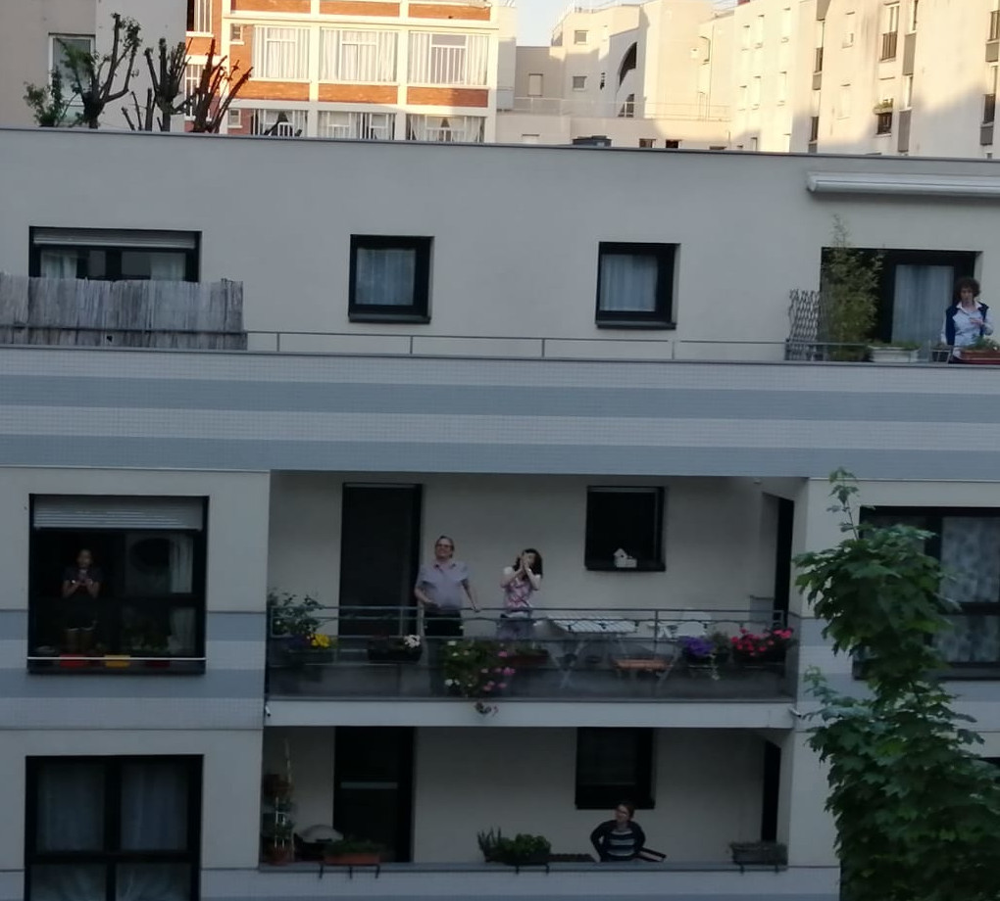

24 avril
La chanson de ce soir : Les copains d'abord revisité
A force de rester enfermé
On commence à bien s'emmerder
Mais il faut bien perséverer
Oui perséverer
Ca finira bien par rentrer
Qu'il faut rester dans nos foyers
Et après viendra l'réconfort
Les voisins d'abord
En ces temps durs de confinement
On chante tous les soirs heureusement
C'est ça qui nous fait t'nir le coup
Oui tenir le coup
A 20h après les bravos
Qu'il fasse gris ou bien qu'il fasse beau
La chorale des voisins d'abord
Les voisins d'abord
Quand on sera déconfinés
Qu'on pourra plus s'contaminer,
On aura tous des anticorps
Tous des anticorps.
On fêtera ça dans un restau,
Avec un bon château Margaux.
Et fermons la boît' de Pandore,
La boît' de Pandore.
Les musiciens de la copro
transpir' tous les soirs sang et eau
Pour faire chanter les confinés
Sur leur balconnets
Ça crée des liens et ça c est bien
On pense à ceux qui sont atteints
La copro c est notre sémaphore
Les voisins d abord
Si vous voulez écouter l'original :
Si vous voulez relire la petite présentation de la chanson, elle est disponible ici.
Les photos d'hier :
Voici une vidéo envoyée il y a quelques jours par Gabriel, un voisin confiné hors de Paris, qui nous accompagne à distance :
Comme je jouais de la trompette, je n'ai pas pu bien filmer, il n'y a donc qu'un seul petit extrait. Pour continuer à illustrer le blog, pensez à m'envoyer quelques vidéos/photos ici :).
Ainsi qu'une photo de quelques chanteurs :
Si vous avez des vidéos, des photos, ou des enregistrements, n'hésitez pas à les envoyer à blogdesvoisins@gmail.com !